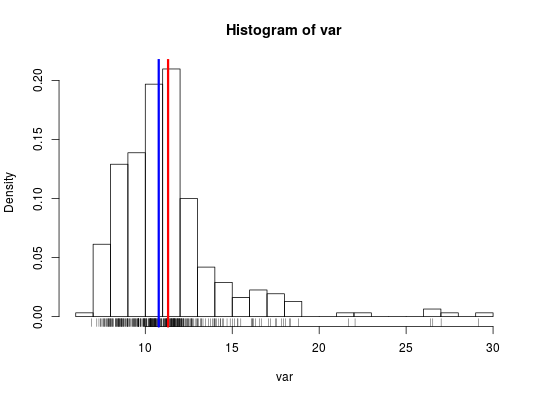
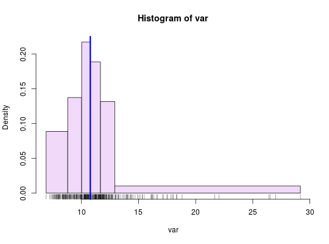
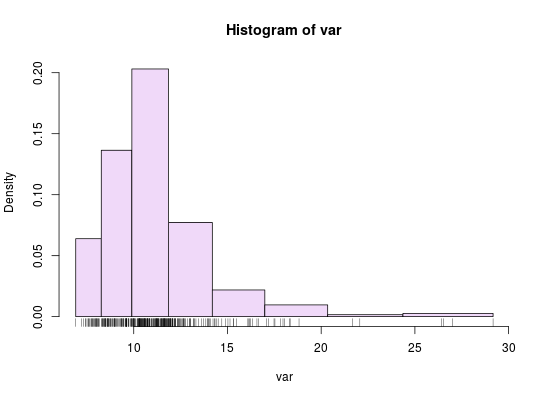

Discretization
A function to discretize continious variables.
getBreaks(v, nclass = NULL, method = "quantile", k = 1, middle = FALSE)
Arguments
- v
- a vector of numeric values.
- nclass
- a number of classes
- method
- a discretization method; one of "sd", "equal", "quantile", "fisher-jenks","q6", "geom" or "msd" (see Details).
- k
- number of standard deviation for "msd" method (see Details)..
- middle
- creation of a central class for "msd" method (see Details).
Value
A numeric vector of breaks
Details
"sd", "equal", "quantile" and "fisher-jenks" are classIntervals methods. Jenks and Fisher-Jenks algorithms are based on the same principle and give quite similar results but Fisher-Jenks is much faster. The "q6" method uses the following quantile probabilities: 0, 0.05, 0.275, 0.5, 0.725, 0.95, 1. The "geom" method is based on a geometric progression along the variable values. The "msd" method is based on the mean and the standard deviation of a numeric vector. The nclass parameter is not relevant, use k and middle instead. k indicates the extent of each class in share of standard deviation. If middle=TRUE then the mean value is the center of a class else the mean is a break value.
Note
This function is mainly a wrapper around classIntervals function of the classInt package + q6, geom and msd methods.
Examples
data("nuts2006") # Create the natality rate var <- nuts2.df$birth_2008/nuts2.df$pop2008 * 1000 # Histogram hist(var, probability = TRUE, nclass = 30)rug(var)moy <- mean(var) med <- median(var) abline(v = moy, col = "red", lwd = 3)abline(v = med, col = "blue", lwd = 3)# Quantile intervals breaks <- getBreaks(v = var, nclass = 6, method = "quantile") hist(var, probability = TRUE, breaks = breaks, col = "#F0D9F9")rug(var)med <- median(var) abline(v = med, col = "blue", lwd = 3)# Geometric intervals breaks <- getBreaks(v = var, nclass = 8, method = "geom") hist(var, probability = TRUE, breaks = breaks, col = "#F0D9F9")rug(var)# Mean and standard deviation (msd) breaks <- getBreaks(v = var, method = "msd", k = 1, middle = TRUE) hist(var, probability = TRUE, breaks = breaks, col = "#F0D9F9")rug(var)moy <- mean(var) sd <- sd(var) abline(v = moy, col = "red", lwd = 3)abline(v = moy + 0.5 * sd, col = "blue", lwd = 3)abline(v = moy - 0.5 * sd, col = "blue", lwd = 3)